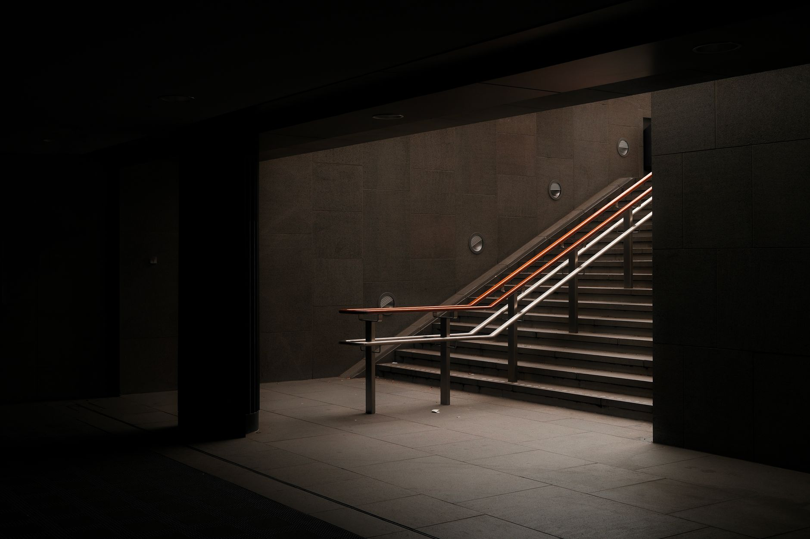

A self-directed IRA lets you hold physical silver inside a tax-advantaged retirement account. You own real metal, not a paper proxy. The IRS allows it, but it comes with strict rules on what you can buy, who holds the account, and where the silver gets stored. This guide walks you through every step, from choosing a custodian to placing your first purchase.

Photo by Thomas balabaud on Pexels
IRAs held $19.2 trillion in assets at year-end 2025, representing 39% of all U.S. retirement market assets (Source: Investment Company Institute). Most of that sits in stocks and bonds. A self-directed IRA gives you a direct path into physical silver using money that would otherwise stay in a standard account.
Key Takeaways - A self-directed IRA allows physical silver ownership with tax-deferred growth, but requires an IRS-approved custodian and depository, not a standard brokerage - Silver's annual average price rose 42% year-over-year in 2025 to approximately $40/oz, the strongest gain since 2011 (Source: The Silver Institute) - IRS-eligible silver must be .999 fine or better; home storage is prohibited and triggers taxes plus a 10% early withdrawal penalty - The silver market recorded its fifth consecutive annual supply deficit in 2025, with demand outpacing supply by 95 million ounces (Source: The Silver Institute)
Photo by Zlaťáky.cz on Pexels
Step 1: Choose an IRS-Approved Self-Directed Custodian
Standard brokerages like Fidelity or Vanguard will not hold physical silver for you. You need a self-directed IRA custodian, a company specializing in alternative assets. The IRS requires one to administer your account and execute all metal purchases on your behalf.
What to look for when comparing custodians:
Flat annual fees, not percentage-based. Percentage fees grow as your silver's value grows. A custodian charging 0.5% on a $100,000 account costs $500 per year. A flat-fee custodian charges the same $150 to $250 regardless of account size.
Precious metals experience. Some self-directed custodians focus on real estate or crypto. You want one that handles metals regularly and understands IRS purity rules.
An approved dealer list. Custodians can only execute purchases through dealers they authorize. Ask for that list before you open the account.
A written fee schedule. Setup fees run $50 to $100. Annual administrative fees run $100 to $300. Get every cost in writing.
Well-regarded options in the precious metals space include Equity Trust, STRATA Trust, and Kingdom Trust. Before opening any account, verify the custodian's standing with the Better Business Bureau and confirm no IRS notices have been issued against them.
Step 2: Fund Your New Account
Once the account is open, you have three ways to move money in.
Direct contribution. The 2026 IRS contribution limit is $7,000 per year, or $8,000 if you are 50 or older. This works well if you want to start small and build over time.
IRA-to-IRA transfer. If you already hold a traditional IRA, you can move funds directly to your self-directed IRA as a trustee-to-trustee transfer. No taxes, no penalties, no limit on the transfer amount.
401k rollover. If you have a 401k from a former employer, you can roll it into a self-directed IRA. Make sure the rollover check is payable to your new custodian, not to you personally. If the check names you, the IRS treats it as a distribution and withholds 20% immediately.
As of mid-2025, 44% of U.S. households owned IRAs, a record high, and approximately 27 million traditional IRA-owning households already hold rollover assets (Source: Investment Company Institute). If you have an old employer plan sitting idle, a rollover is the fastest path to a funded silver IRA without any out-of-pocket cost.
Step 3: Select IRS-Approved Silver Products
After your account is funded, you submit a purchase direction letter to your custodian. You specify what you want to buy. The custodian contacts an approved dealer, places the order, and the silver ships directly to an IRS-approved depository. The metal never passes through your hands.
The IRS requires silver held inside an IRA to meet a minimum purity of .999 fine. That rules out pre-1965 U.S. junk silver, even though 90% silver coins are legitimate buys in a regular account.
IRS-eligible silver products include:
American Silver Eagles (a statutory IRS exemption applies despite their .9393 purity)
Canadian Silver Maple Leaf coins (.9999 fine)
Austrian Philharmonic silver coins (.999 fine)
Silver bars from COMEX or LBMA-approved refiners at .999 or higher (PAMP Suisse, Johnson Matthey, Engelhard)
.999 fine silver rounds from recognized private mints
We stock IRS-eligible silver at Fused Distribution, including American Silver Eagles, Canadian Maple Leafs, and .999 fine bars in 10 oz and 100 oz sizes. When your custodian places a purchase order with us, the metal goes straight to your designated depository.
Step 4: Arrange Storage at an IRS-Approved Depository
This is the rule most first-time buyers overlook. You cannot store IRA silver at home, in a personal safe, or in a safety deposit box under your own name. The IRS requires a qualified trustee or custodian to hold the metal at all times. Taking personal possession before retirement age is treated as a distribution, meaning income tax plus a 10% early withdrawal penalty if you are under 59.5 years old.
IRS-approved depositories include:
Delaware Depository (Wilmington, DE), the most commonly used for precious metals IRAs
Brinks Global Services (multiple U.S. locations)
International Depository Services (Texas and Delaware)
CNT Depository (Massachusetts)
Commingled storage, where your metal pools with other investors' holdings, runs $100 to $175 per year. Segregated storage, where your specific coins or bars are kept separate and labeled, runs $150 to $300 per year. Segregated costs more but gives you the clearest ownership claim if the depository ever has an issue. Ask which depositories your custodian works with before you open the account, since not all custodians support all facilities.
What Silver Qualifies and What Does Not
A single prohibited transaction can disqualify the entire IRA, making all assets immediately taxable. Know the boundaries before you buy.
Not allowed:
Pre-1965 U.S. dimes, quarters, and half-dollars (90% silver, below the .999 threshold)
Collectible coins, even silver ones, unless they meet the fineness requirement
Silver you already own personally (you cannot contribute metal, only cash)
Any transaction where you personally take delivery of the metal at any point
Allowed:
New purchases made by the custodian through an approved dealer
.999 or finer bars from COMEX or LBMA-approved refiners
American Silver Eagles, Canadian Maple Leafs, Austrian Philharmonics, and Australian Kookaburras
The core rule: the custodian buys it, an approved depository holds it, and you do not touch it until retirement. Stay inside that structure and you stay compliant.
Why the Silver IRA Case Is Stronger Now Than Two Years Ago
Silver's annual average price rose 42% year-over-year in 2025 to approximately $40 per ounce, the strongest annual average gain since 2011 (Source: The Silver Institute, World Silver Survey 2026). When you hold silver inside a tax-deferred account, that kind of price appreciation compounds without an annual capital gains drag.
The supply picture adds urgency. The silver market recorded its fifth consecutive annual supply deficit in 2025, with demand exceeding supply by 95 million ounces (Source: The Silver Institute). More buyers competing for less available metal creates durable upward price pressure. Getting your IRA structure in place now means buying before that pressure builds further through 2026.
Global physical silver investment is forecast to rise 20% to 227 million ounces in 2026, a three-year high, as macroeconomic uncertainty pulls more investors toward hard assets (Source: The Silver Institute). IRAs offer the most tax-efficient wrapper for that investment, especially if you fund from a rollover that reduces your taxable income this year.
Full Cost Breakdown Before You Commit
| Cost | Typical Range | |---|---| | Custodian account setup | $50 to $100 | | Annual custodian fee | $100 to $300 | | Commingled depository storage | $100 to $175 per year | | Segregated depository storage | $150 to $300 per year | | Dealer premium over spot | 3% to 15% depending on product |
The dealer premium is the spread above the live silver spot price. American Silver Eagles carry higher premiums than 10 oz bars because of coin production costs and collector demand. If you are buying purely for IRA cost efficiency rather than numismatic value, 10 oz bars from LBMA-approved refiners typically offer the lowest premium per ounce.
Request a current premium schedule from any dealer before your custodian submits the purchase direction. Premiums move with market conditions and can shift week to week.
Open Your Silver IRA This Week
Here is the full sequence from decision to confirmed metal in a depository:
Contact two or three custodians. Request the full fee schedule and approved dealer list. Compare flat fees against percentage-based fees.
Open the account online. Most custodians complete setup in two to five business days.
Initiate funding. Transfer from an existing IRA or roll over an old 401k. For rollovers, confirm the check is payable to your new custodian, not to you.
Choose your silver products. Pick IRS-eligible coins or bars. We recommend contacting us at Fused Distribution for current pricing and available inventory before you submit your direction letter.
Submit a purchase direction letter. Specify the product, quantity, and dealer. Your custodian places the order.
Confirm depository receipt. Your custodian sends written confirmation once the metal is secured. Keep that record with your IRA paperwork.
You can move from step one to confirmed purchase in under two weeks. If you're ready to start, visit our reserve page and we'll walk through inventory and pricing with you directly.
Frequently Asked Questions
Can I store silver IRA coins at home if I use a home safe?
No. Home storage of IRA silver is prohibited regardless of how secure your setup is. The IRS treats it as a distribution, triggering income tax and a 10% early withdrawal penalty if you're under 59.5 years old. All IRA silver must stay at an IRS-approved depository.
Can I contribute silver I already own to a self-directed IRA?
No. You can only contribute cash to an IRA. The custodian then uses that cash to purchase silver on your behalf. You cannot transfer metal you personally own into an IRA; that counts as a prohibited transaction.
What happens to my silver when I reach retirement age?
At 59.5 or older, you can request an in-kind distribution. Your custodian instructs the depository to ship the physical silver to you. You report the fair market value as income in the year you receive it. After that, the metal is yours to keep, sell, or store however you choose.
Which silver products have the lowest premiums for IRA purposes?
Ten-ounce and 100-ounce bars from LBMA-approved refiners (PAMP Suisse, Engelhard, Johnson Matthey) typically carry the lowest per-ounce premiums, often 3% to 6% over spot. American Silver Eagles carry the highest premiums, often 8% to 15%, due to coin production costs and collector demand.
How long does it take to open a silver IRA and buy metal?
Account setup takes two to five business days at most custodians. An IRA-to-IRA transfer takes three to seven business days. A 401k rollover takes seven to fourteen business days. From there, the custodian can place a purchase order within one to two business days of receiving your direction letter.